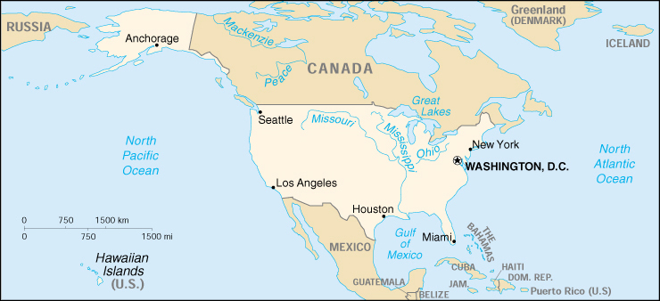

![[Country Flag of United States]](../flags/us-lgflag.jpg)
| United States |
|
         |  | |
| Introduction |
Background: The United States became the world's first modern democracy after its break with Great Britain (1776) and the adoption of a constitution (1789). During the 19th century, many new states were added to the original 13 as the nation expanded across the North American continent and acquired a number of overseas possessions. The two major traumatic experiences in the nation's history were the Civil War (1861-65) and the Great Depression of the 1930s. Buoyed by victories in World Wars I and II and the end of the Cold War in 1991, the US remains the world's most powerful nation-state. The economy is marked by steady growth, low unemployment and inflation, and rapid advances in technology.
| Geography |
Location: North America, bordering both the North Atlantic Ocean and the North Pacific Ocean, between Canada and Mexico
Geographic coordinates: 38 00 N, 97 00 W
Map references: North America
Area:
total:
9,629,091 sq km
land:
9,158,960 sq km
water:
470,131 sq km
note:
includes only the 50 states and District of Columbia
Area - comparative: about one-half the size of Russia; about three-tenths the size of Africa; about one-half the size of South America (or slightly larger than Brazil); slightly larger than China; about two and one-half times the size of Western Europe
Land boundaries:
total:
12,248 km
border countries:
Canada 8,893 km (including 2,477 km with Alaska), Cuba 29 km (US Naval Base at Guantanamo Bay), Mexico 3,326 km
note:
Guantanamo Naval Base is leased by the US and thus remains part of Cuba
Coastline: 19,924 km
Maritime claims:
contiguous zone:
24 nm
continental shelf:
not specified
exclusive economic zone:
200 nm
territorial sea:
12 nm
Climate: mostly temperate, but tropical in Hawaii and Florida, arctic in Alaska, semiarid in the great plains west of the Mississippi River, and arid in the Great Basin of the southwest; low winter temperatures in the northwest are ameliorated occasionally in January and February by warm chinook winds from the eastern slopes of the Rocky Mountains
Terrain: vast central plain, mountains in west, hills and low mountains in east; rugged mountains and broad river valleys in Alaska; rugged, volcanic topography in Hawaii
Elevation extremes:
lowest point:
Death Valley -86 m
highest point:
Mount McKinley 6,194 m
Natural resources: coal, copper, lead, molybdenum, phosphates, uranium, bauxite, gold, iron, mercury, nickel, potash, silver, tungsten, zinc, petroleum, natural gas, timber
Land use:
arable land:
19%
permanent crops:
0%
permanent pastures:
25%
forests and woodland:
30%
other:
26% (1993 est.)
Irrigated land: 207,000 sq km (1993 est.)
Natural hazards: tsunamis, volcanoes, and earthquake activity around Pacific Basin; hurricanes along the Atlantic and Gulf of Mexico coasts; tornadoes in the midwest and southeast; mud slides in California; forest fires in the west; flooding; permafrost in northern Alaska, a major impediment to development
Environment - current issues: air pollution resulting in acid rain in both the US and Canada; the US is the largest single emitter of carbon dioxide from the burning of fossil fuels; water pollution from runoff of pesticides and fertilizers; very limited natural fresh water resources in much of the western part of the country require careful management; desertification
Environment - international agreements:
party to:
Air Pollution, Air Pollution-Nitrogen Oxides, Antarctic-Environmental Protocol, Antarctic Treaty, Climate Change, Endangered Species, Environmental Modification, Marine Dumping, Marine Life Conservation, Nuclear Test Ban, Ozone Layer Protection, Ship Pollution, Tropical Timber 83, Tropical Timber 94, Wetlands, Whaling
signed, but not ratified:
Air Pollution-Persistent Organic Pollutants, Air Pollution-Volatile Organic Compounds, Biodiversity, Climate Change-Kyoto Protocol, Desertification, Hazardous Wastes
Geography - note: world's third-largest country (after Russia and Canada)
| People |
Population: 275,562,673 (July 2000 est.)
Age structure:
0-14 years:
21.25% (male 29,956,875; female 28,597,880)
15-64 years:
66.11% (male 90,345,154; female 91,827,471)
65 years and over:
12.64% (male 14,472,865; female 20,362,428) (2000 est.)
Population growth rate: 0.91% (2000 est.)
Birth rate: 14.2 births/1,000 population (2000 est.)
Death rate: 8.7 deaths/1,000 population (2000 est.)
Net migration rate: 3.5 migrant(s)/1,000 population (2000 est.)
Sex ratio:
at birth:
1.05 male(s)/female
under 15 years:
1.05 male(s)/female
15-64 years:
0.98 male(s)/female
65 years and over:
0.71 male(s)/female
total population:
0.96 male(s)/female (2000 est.)
Infant mortality rate: 6.82 deaths/1,000 live births (2000 est.)
Life expectancy at birth:
total population:
77.12 years
male:
74.24 years
female:
79.9 years (2000 est.)
Total fertility rate: 2.06 children born/woman (2000 est.)
Nationality:
noun:
American(s)
adjective:
American
Ethnic groups:
white 83.5%, black 12.4%, Asian 3.3%, Amerindian 0.8% (1992)
note:
a separate listing for Hispanic is not included because the US Census Bureau considers Hispanic to mean a person of Latin American descent (especially of Cuban, Mexican, or Puerto Rican origin) living in the US who may be of any race or ethnic group (white, black, Asian, etc.)
Religions: Protestant 56%, Roman Catholic 28%, Jewish 2%, other 4%, none 10% (1989)
Languages: English, Spanish (spoken by a sizable minority)
Literacy:
definition:
age 15 and over can read and write
total population:
97%
male:
97%
female:
97% (1979 est.)
| Government |
Country name:
conventional long form:
United States of America
conventional short form:
United States
abbreviation:
US or USA
Data code: US
Government type: federal republic; strong democratic tradition
Capital: Washington, DC
Administrative divisions: 50 states and 1 district*; Alabama, Alaska, Arizona, Arkansas, California, Colorado, Connecticut, Delaware, District of Columbia*, Florida, Georgia, Hawaii, Idaho, Illinois, Indiana, Iowa, Kansas, Kentucky, Louisiana, Maine, Maryland, Massachusetts, Michigan, Minnesota, Mississippi, Missouri, Montana, Nebraska, Nevada, New Hampshire, New Jersey, New Mexico, New York, North Carolina, North Dakota, Ohio, Oklahoma, Oregon, Pennsylvania, Rhode Island, South Carolina, South Dakota, Tennessee, Texas, Utah, Vermont, Virginia, Washington, West Virginia, Wisconsin, Wyoming
Dependent areas:
American Samoa, Baker Island, Guam, Howland Island, Jarvis Island, Johnston Atoll, Kingman Reef, Midway Islands, Navassa Island, Northern Mariana Islands, Palmyra Atoll, Puerto Rico, Virgin Islands, Wake Island
note:
from 18 July 1947 until 1 October 1994, the US administered the Trust Territory of the Pacific Islands, but recently entered into a new political relationship with all four political units: the Northern Mariana Islands is a commonwealth in political union with the US (effective 3 November 1986); Palau concluded a Compact of Free Association with the US (effective 1 October 1994); the Federated States of Micronesia signed a Compact of Free Association with the US (effective 3 November 1986); the Republic of the Marshall Islands signed a Compact of Free Association with the US (effective 21 October 1986)
Independence: 4 July 1776 (from Great Britain)
National holiday: Independence Day, 4 July (1776)
Constitution: 17 September 1787, effective 4 March 1789
Legal system: based on English common law; judicial review of legislative acts; accepts compulsory ICJ jurisdiction, with reservations
Suffrage: 18 years of age; universal
Executive branch:
chief of state:
President William Jefferson CLINTON (since 20 January 1993) and Vice President Albert GORE, Jr. (since 20 January 1993); note - the president is both the chief of state and head of government
head of government:
President William Jefferson CLINTON (since 20 January 1993) and Vice President Albert GORE, Jr. (since 20 January 1993); note - the president is both the chief of state and head of government
cabinet:
Cabinet appointed by the president with Senate approval
elections:
president and vice president elected on the same ticket by a college of representatives who are elected directly from each state; president and vice president serve four-year terms; election last held 5 November 1996 (next to be held 7 November 2000)
election results:
William Jefferson CLINTON reelected president; percent of popular vote - William Jefferson CLINTON (Democratic Party) 49.2%, Robert DOLE (Republican Party) 40.7%, Ross PEROT (Reform Party) 8.4%, other 1.7%
Legislative branch:
bicameral Congress consists of Senate (100 seats, one-third are renewed every two years; two members are elected from each state by popular vote to serve six-year terms) and House of Representatives (435 seats; members are directly elected by popular vote to serve two-year terms)
elections:
Senate - last held 2 November 1998 (next to be held 7 November 2000); House of Representatives - last held 2 November 1998 (next to be held 7 November 2000)
election results:
Senate - percent of vote by party - NA; seats by party - Republican Party 55, Democratic Party 45; House of Representatives - percent of vote by party - NA; seats by party - Republican Party 223, Democratic Party 211, independent 1
Judicial branch: Supreme Court (the nine justices are appointed for life by the president with confirmation by the Senate)
Political parties and leaders: Democratic Party [Steve GROSSMAN, national committee chairman]; Republican Party [Jim NICHOLSON, national committee chairman]; several other groups or parties of minor political significance
International organization participation: ANZUS, APEC, AsDB, Australia Group, BIS, CCC, CE (observer), CERN (observer), CP, EAPC, EBRD, ECE, ECLAC, ESCAP, FAO, G-5, G-7, G-10, IADB, IAEA, IBRD, ICAO, ICC, ICFTU, ICRM, IDA, IEA, IFAD, IFC, IFRCS, IHO, ILO, IMF, IMO, Inmarsat, Intelsat, Interpol, IOC, IOM, ISO, ITU, MINURSO, MIPONUH, NAM (guest), NATO, NEA, NSG, OAS, OECD, OPCW, OSCE, PCA, SPC, UN, UN Security Council, UNCTAD, UNHCR, UNIDO, UNIKOM, UNMIBH, UNMIK, UNOMIG, UNRWA, UNTAET, UNTSO, UNU, UPU, WCL, WHO, WIPO, WMO, WTrO, ZC
Flag description: thirteen equal horizontal stripes of red (top and bottom) alternating with white; there is a blue rectangle in the upper hoist-side corner bearing 50 small, white, five-pointed stars arranged in nine offset horizontal rows of six stars (top and bottom) alternating with rows of five stars; the 50 stars represent the 50 states, the 13 stripes represent the 13 original colonies; known as Old Glory; the design and colors have been the basis for a number of other flags, including Chile, Liberia, Malaysia, and Puerto Rico
| Economy |
Economy - overview: The US has the most technologically powerful, diverse, advanced, and largest economy in the world, with a per capita GDP of $33,900. In this market-oriented economy, private individuals and business firms make most of the decisions, and government buys needed goods and services predominantly in the private marketplace. US business firms enjoy considerably greater flexibility than their counterparts in Western Europe and Japan in decisions to expand capital plant, lay off surplus workers, and develop new products. At the same time, they face higher barriers to entry in their rivals' home markets than the barriers to entry of foreign firms in US markets. US firms are at or near the forefront in technological advances, especially in computers and in medical, aerospace, and military equipment, although their advantage has narrowed since the end of World War II. The onrush of technology largely explains the gradual development of a "two-tier labor market" in which those at the bottom lack the education and the professional/technical skills of those at the top and, more and more, fail to get pay raises, health insurance coverage, and other benefits. Since 1975, practically all the gains in household income have gone to the top 20% of households. The years 1994-99 witnessed solid increases in real output, low inflation rates, and a drop in unemployment to below 5%. Long-term problems include inadequate investment in economic infrastructure, rapidly rising medical costs of an aging population, sizable trade deficits, and stagnation of family income in the lower economic groups. The outlook for 2000 is clouded by the continued economic problems of Japan, Russia, Indonesia, Brazil, and many other countries. Domestically, the potentially most serious problem is the exuberant level of stock prices in relation to corporate earnings.
GDP: purchasing power parity - $9.255 trillion (1999 est.)
GDP - real growth rate: 4.1% (1999 est.)
GDP - per capita: purchasing power parity - $33,900 (1999 est.)
GDP - composition by sector:
agriculture:
2%
industry:
18%
services:
80% (1999)
Population below poverty line: 12.7% (1999 est.)
Household income or consumption by percentage share:
lowest 10%:
1.5%
highest 10%:
28.5% (1994)
Inflation rate (consumer prices): 2.2% (1999)
Labor force: 139.4 million (includes unemployed) (1999)
Labor force - by occupation:
managerial and professional 30.3%, technical, sales and administrative support 29.2%, services 13.4%, manufacturing, mining, transportation, and crafts 24.5%, farming, forestry, and fishing 2.6% (1999)
note:
figures exclude the unemployed
Unemployment rate: 4.2% (1999)
Budget:
revenues:
$1.828 trillion
expenditures:
$1.703 trillion, including capital expenditures of $NA (1999)
Industries: leading industrial power in the world, highly diversified and technologically advanced; petroleum, steel, motor vehicles, aerospace, telecommunications, chemicals, electronics, food processing, consumer goods, lumber, mining
Industrial production growth rate: 2.4% (1999 est.)
Electricity - production: 3.62 trillion kWh (1998)
Electricity - production by source:
fossil fuel:
70.34%
hydro:
8.96%
nuclear:
18.61%
other:
2.09% (1998)
Electricity - consumption: 3.365 trillion kWh (1998)
Electricity - exports: 12.772 billion kWh (1998)
Electricity - imports: 39.513 billion kWh (1998)
Agriculture - products: wheat, other grains, corn, fruits, vegetables, cotton; beef, pork, poultry, dairy products; forest products; fish
Exports: $663 billion (f.o.b., 1998 est.)
Exports - commodities: capital goods, automobiles, industrial supplies and raw materials, consumer goods, agricultural products
Exports - partners: Canada 23%, Mexico 12%, Japan 8%, UK 6%, Germany 4%, France 3%, Netherlands 3% (1998)
Imports: $912 billion (c.i.f., 1998 est.)
Imports - commodities: crude oil and refined petroleum products, machinery, automobiles, consumer goods, industrial raw materials, food and beverages
Imports - partners: Canada 19%, Japan 13%, Mexico 10%, China 8%, Germany 5%, UK 4%, Taiwan 4% (1998)
Debt - external: $862 billion (1995 est.)
Economic aid - donor: ODA, $6.9 billion (1997)
Currency: 1 United States dollar (US$) = 100 cents
Exchange rates:
British pounds per US$ - 0.6092 (January 2000), 0.6180 (1999), 0.6037 (1998), 0.6106 (1997), 0.6403 (1996), 0.6335 (1995); Canadian dollars (Can$) per US$ - 1.4489 (January 2000), 1.4857 (1999), 1.4835 (1998), 1.3846 (1997), 1.3635 (1996), 1.3724 (1995); French francs (F) per US$ - 5.65 (January 1999), 5.8995 (1998), 5.8367 (1997), 5.1155 (1996), 4.9915 (1995), 5.5520 (1994); Italian lire (Lit) per US$ - 1,668.7 (January 1999), 1,763.2 (1998), 1,703.1 (1997), 1,542.9 (1996), 1,628.9 (1995), 1,612.4 (1994); Japanese yen per US$ - 105.16 (January 2000), 113.91 (1999), 130.91 (1998), 120.99 (1997), 108.78 (1996), 94.06 (1995); German deutsche marks (DM) per US$ - 1.69 (January 1999), 1.9692 (1998), 1.7341 (1997), 1.5048 (1996), 1.4331 (1995), 1.6228 (1994); Euro per US$ - 0.98673 (January 1999), 0.93863 (1999)
note:
France, Italy, and Germany have adopted the euro since 1998
Fiscal year: 1 October - 30 September
| Communications |
Telephones - main lines in use: 178 million (1999)
Telephones - mobile cellular: 55.312 million (1997)
Telephone system:
domestic:
a large system of fiber-optic cable, microwave radio relay, coaxial cable, and domestic satellites carries every form of telephone traffic; a rapidly growing cellular system carries mobile telephone traffic throughout the country
international:
24 ocean cable systems in use; satellite earth stations - 61 Intelsat (45 Atlantic Ocean and 16 Pacific Ocean), 5 Intersputnik (Atlantic Ocean region), and 4 Inmarsat (Pacific and Atlantic Ocean regions) (2000)
Radio broadcast stations: AM about 5,000, FM about 5,000, shortwave 18 (1998)
Radios: 575 million (1997)
Television broadcast stations: more than 1,500 (including nearly 1,000 stations affiliated with the five major networks - NBC, ABC, CBS, FOX, and PBS; in addition, there are about 9,000 cable TV systems) (1997)
Televisions: 219 million (1997)
Internet Service Providers (ISPs): 7,600 (1999 est.)
| Transportation |
Railways:
total:
240,000 km mainline routes (nongovernment owned)
standard gauge:
240,000 km 1.435-m gauge (1989)
Highways:
total:
6,348,227 km
paved:
3,732,757 km (including 88,727 km of expressways)
unpaved:
2,615,470 km (1997 est.)
Waterways: 41,009 km of navigable inland channels, exclusive of the Great Lakes
Pipelines: petroleum products 276,000 km; natural gas 331,000 km (1991)
Ports and harbors: Anchorage, Baltimore, Boston, Charleston, Chicago, Duluth, Hampton Roads, Honolulu, Houston, Jacksonville, Los Angeles, New Orleans, New York, Philadelphia, Port Canaveral, Portland (Oregon), Prudhoe Bay, San Francisco, Savannah, Seattle, Tampa, Toledo
Merchant marine:
total:
386 ships (1,000 GRT or over) totaling 11,634,608 GRT/15,574,117 DWT
ships by type:
barge carrier 10, bulk 67, cargo 28, chemical tanker 14, combination bulk 2, container 84, liquified gas 10, multi-functional large load carrier 3, passenger 7, passenger/cargo 1, petroleum tanker 104, roll-on/roll-off 43, short-sea passenger 3, specialized tanker 1, vehicle carrier 9 (1999 est.)
Airports: 14,572 (1999 est.)
Airports - with paved runways:
total:
5,174
over 3,047 m:
180
2,438 to 3,047 m:
221
1,524 to 2,437 m:
1,310
914 to 1,523 m:
2,448
under 914 m:
1,015 (1999 est.)
Airports - with unpaved runways:
total:
9,398
over 3,047 m:
2
2,438 to 3,047 m:
6
1,524 to 2,437 m:
155
914 to 1,523 m:
1,661
under 914 m:
7,574 (1999 est.)
Heliports: 118 (1999 est.)
| Military |
Military branches:
Department of the Army, Department of the Navy (includes Marine Corps), Department of the Air Force
note:
the Coast Guard is normally subordinate to the Department of Transportation, but in wartime reports to the Department of the Navy
Military manpower - military age: 18 years of age
Military manpower - availability:
males age 15-49:
70,502,691 (2000 est.)
Military manpower - fit for military service:
males age 15-49:
2,056,762 (2000 est.)
Military expenditures - dollar figure: $276.7 billion (FY1999 est.)
Military expenditures - percent of GDP: 3.2% (FY1999 est.)
| Transnational Issues |
Disputes - international: maritime boundary disputes with Canada (Dixon Entrance, Beaufort Sea, Strait of Juan de Fuca, Machias Seal Island); US Naval Base at Guantanamo Bay is leased from Cuba and only mutual agreement or US abandonment of the area can terminate the lease; Haiti claims Navassa Island; US has made no territorial claim in Antarctica (but has reserved the right to do so) and does not recognize the claims of any other nation; Marshall Islands claims Wake Island
Illicit drugs: consumer of cocaine shipped from Colombia through Mexico and the Caribbean; consumer of heroin, marijuana, and increasingly methamphetamines from Mexico; consumer of high-quality Southeast Asian heroin; illicit producer of cannabis, marijuana, depressants, stimulants, hallucinogens, and methamphetamines; drug-money-laundering center